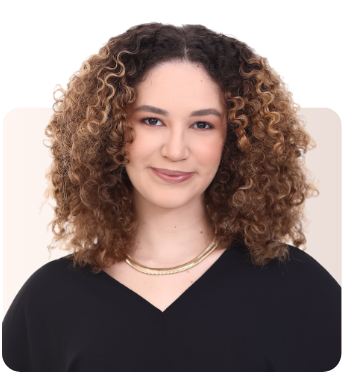

Social listening e pesquisa social para transformar conversas e opiniões em leitura estratégica.

Bacharela em Ciências Sociais pela Universidade Federal Rural de Pernambuco, com interesse acadêmico e profissional voltado à produção de pesquisas nas áreas de Comunicação Social e Ciência Política. Atualmente, atuo como analista de pesquisa eleitoral, aplicando metodologias quantitativas e qualitativas para a produção de diagnósticos estratégicos.
Resumo das experiências em pesquisa, social CRM e sucesso do cliente, conectando dados, comunicação e Ciências Sociais.
Bacharela em Ciências Sociais pela Universidade Federal Rural de Pernambuco (UFRPE) - mar. de 2020 até mar. de 2025
Voluntária no grupo Comunicação, Mudanças Sociais e Direito (COMUDI) da UFRPE - jan. de 2023 até mar. de 2025
Voluntária em Iniciação Científica na Universidade Federal Rural de Pernambuco (UFRPE) - set. de 2023 até set. de 2024
Congresso de Filosofia promovido pela Universidade Católica de Pernambuco (UNICAP) - mai. de 2023
2° edição do Evento de Integração e Inovação vinculado à UFRPE - jan. de 2023 até ago. de 2023
Voluntária no pré-vestibular Portal Sociologia (UFPE) - mar. de 2021 até dez. de 2021
Este projeto reúne o acompanhamento contínuo das intenções de voto desde o início de 2026, desenvolvido no Meio em parceria com o Instituto IDEIA.
Apesar do alto índice de contentamento, 33% dos brasileiros citam a ansiedade como a emoção mais frequente no dia a dia, enquanto 29% apontam o estresse.
A pesquisa buscou entender como incentivar a participação dos brasileiros nas eleições de 2022 diante do aumento da abstenção.
O projeto Meio/Ideia consolida o acompanhamento contínuo das intenções de voto e dinâmicas políticas, com diagnósticos precisos desde o início de 2026.
Desenvolvido no Canal Meio, em parceria com o Instituto IDEIA, esta iniciativa busca traduzir a percepção pública através de metodologias combinadas e escuta ativa da sociedade. Ao acessar a publicação original, você encontra os relatórios, gráficos e os desdobramentos completos da pesquisa.
Acessar matéria no Canal MeioApesar de o brasileiro apresentar, no geral, um alto índice de contentamento, um mergulho profundo nos dados sociais revela camadas complexas sobre como nos sentimos.
A pesquisa inédita destaca que 33% dos brasileiros citam a ansiedade como a emoção mais frequente no dia a dia, e 29% apontam o estresse. O estudo evidencia paralelos interessantes: perfis específicos, como idosos e grupos religiosos, relatam maior felicidade, enquanto rotinas extenuantes (como escalas de trabalho 6x1) afetam diretamente a percepção de bem-estar dos mais jovens.
Ler reportagem completa n'O GloboAs eleições de 2022 apresentaram um grande desafio democrático: o risco iminente de uma abstenção recorde nas urnas.
Através da pesquisa "Assemble to Vote", o objetivo central foi realizar uma leitura social para entender o comportamento do eleitor brasileiro e desenhar estratégias focadas em incentivar e engajar a participação cidadã. O projeto foi reconhecido no Shorty Awards, evidenciando o impacto de usar dados para direcionar comunicação com propósito.
Ver projeto no Shorty Awards